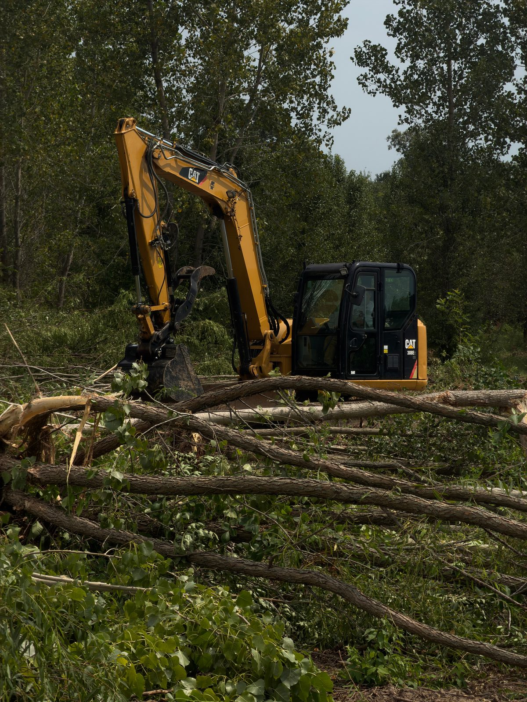

If you're trying to figure out land clearing cost in Columbia, MO, here's the short answer up front: most jobs run between $1,500 and $6,000 per acre, and the spread that wide is not me dodging the question. It's real. An acre of overgrown pasture and an acre of mature hardwoods are two completely different jobs, even when they sit on the same property.
I'm Chris Kurtz, owner of Atlas Excavation & Demolition. We clear land every week somewhere around Columbia, MO and the rest of Mid-Missouri. This post breaks down what land clearing actually costs per acre by project type, what drives the number up or down, and how to spend less without getting burned.
Quick Answer: Land clearing cost in Columbia, MO runs roughly $1,500 to $6,000 per acre. Brush hogging overgrown pasture is the cheap end at $250 to $600 per acre. Forestry mulching brush and small trees lands around $1,200 to $3,000 per acre. Full clearing of heavy woods with stump and debris removal hits $4,000 to $8,000 per acre. Price depends on tree size, density, slope, and whether debris gets mulched in place or hauled off. Call Atlas at (573) 234-6641 for a free on-site walkthrough.
In This Guide:
What Drives Land Clearing Cost in Mid-Missouri
Before I give you per-acre numbers, you need to understand why the range is so wide. Five things move the price more than anything else.
Tree and brush density. This is the big one. A lot covered in tall grass, blackberry, and saplings clears fast. A lot with trees growing trunk-to-trunk takes far more equipment time per acre. We price by what's actually growing, not by a satellite photo.
Tree size. Stem diameter matters more than height. A forestry mulcher eats 2-inch to 6-inch saplings all day. Once you get into 10-inch, 14-inch, and bigger hardwoods (oak, hickory, walnut, the stuff that grows thick across Boone County), the work slows down and the cost per acre climbs.
What happens to the debris. Mulching grinds everything in place and leaves it as ground cover, so there's no haul-off cost. Traditional clearing pushes material into piles that get burned or trucked to a disposal site. Hauling is one of the most expensive line items on any clearing job, so the disposal method swings the price a lot.
Terrain and slope. Mid-Missouri is not flat. Hilly lots, wet bottoms along the creek lines, and rocky ground all slow equipment down and add cost. Heavy clay that turns to soup after a spring rain can push a job to a drier week.
Access and acreage. Can we get a machine and a truck to the work easily, or is there a narrow gate, a soft bridge, or a half-mile two-track to deal with? And total size matters in your favor: clearing 10 acres costs less per acre than clearing one, because mobilizing the equipment is a fixed cost spread across more ground.
Land Clearing Cost Per Acre by Project Type
Here are the real per-acre ranges we see on land clearing jobs around Columbia and Mid-Missouri. These assume reasonable access and a job that's at least an acre or two.
| Project Type | What It Covers | Typical Cost Per Acre |
|---|---|---|
| Brush hogging | Mowing tall grass, weeds, and light brush. No root or tree removal. | $250 to $600 |
| Forestry mulching (light) | Brush, saplings, and small trees ground in place, left as mulch. | $1,200 to $2,500 |
| Forestry mulching (heavy) | Dense growth and mid-size trees, mulched in place, more passes. | $2,500 to $4,000 |
| Traditional clearing (light woods) | Trees and brush pushed, piled, and hauled or burned. | $2,000 to $4,000 |
| Traditional clearing (heavy woods) | Mature hardwoods, stump and root removal, full haul-off. | $4,000 to $8,000 |
| Building lot clearing | Clearing a residential build pad, stumps out, debris removed, graded. | $3,000 to $8,000 per lot |
A couple of notes on reading that table. Brush hogging is cheap because it's basically heavy mowing. It's great for keeping a field open or knocking down a season of growth, but it does not remove anything below the surface. If you want the land actually cleared and usable, mulching or full clearing is what you're looking at.
Pasture reclamation, where overgrown ground gets brought back into usable shape, usually combines a brush hogging pass with targeted mulching on the worst spots. For a 5 to 10 acre overgrown pasture in Fulton or out in rural Boone County, that often pencils out to $800 to $1,800 per acre depending on how far it's gone.
Forestry Mulching vs. Traditional Clearing: The Cost Difference
This is the question I get most, so it's worth a section. The two methods cost different amounts and leave the land in a different state.
Forestry mulching uses a machine with a grinding head that chews brush and trees down to chips right where they stand. The chips stay on the ground as mulch. Nothing gets hauled. That saves you the trucking and disposal cost, and the mulch layer actually helps with erosion and weed control, which matters on the hilly ground around here. Mulching wins on price for brush, saplings, and trees up to roughly 8 inches across.
Traditional clearing uses a dozer or an excavator to push and pull material into piles. Then it gets burned (where allowed) or loaded and hauled off. This is the right call when you need stumps and roots fully gone, when the trees are too big for a mulcher to be efficient, or when you can't leave a mulch layer because something is getting built on the spot.
Rule of thumb: If you want the brush gone and you don't mind chips left behind, mulching is usually cheaper. If you need bare, build-ready dirt with the roots out, plan on traditional clearing plus site preparation, and budget more.
Plenty of jobs use both. We'll mulch the brushy understory and the small stuff, then bring in the excavator for the handful of big trees and the stumps. Mixing methods on the same job is often the cheapest path to the result you actually want.
What's Included in an Atlas Land Clearing Estimate
One of the most common complaints I hear about other outfits is the surprise invoice. The price doubles because of haul fees or stump charges that never got mentioned. We don't work that way. When Atlas gives you a flat written price after walking the property, it covers the whole scope we agreed on.
A typical Atlas land clearing estimate includes:
- The free on-site walkthrough and a flat written quote, not a guess off a map
- Mobilizing the equipment to your property and back
- The actual clearing by the agreed method (mulching, traditional, or both)
- Debris handling as quoted, whether that's mulch-in-place, burn, or haul-off
- Rough grade and basic cleanup so the ground is usable when we leave
- Checking local permit and land-disturbance rules for your parcel
We're licensed and insured, which not every small operator running a rented mulcher can say. On a clearing job, where there's fire risk on burns and real liability around property lines and underground utilities, that protection matters to you as the property owner.
Permits and Local Rules for Clearing Land in Boone County
For most rural land clearing in Boone County, you don't need a special permit to cut brush and trees on your own property. The thing that triggers paperwork is soil disturbance, not the clearing itself.
If your project disturbs one acre or more of ground, Missouri DNR requires a stormwater land disturbance permit. You can read the requirements on the Missouri DNR construction land disturbance permit page. Clearing a lot for a new build inside Columbia city limits also falls under the city's site development and erosion control rules, which is a separate process from the clearing work.
There are a few other local things worth knowing. Work near creeks, sinkholes, and floodplains can carry buffer restrictions, and that's common in our karst-heavy part of Missouri. Burning debris has its own rules, and open-burning is restricted or banned at certain times of year and inside some city limits. Atlas checks the rules for your specific parcel before we start so you don't catch a stop-work order in the middle of a job.
We clear land across Columbia, Ashland, Harrisburg, Hallsville, Boonville, Fulton, Centralia, Rocheport, and the rural stretches of Boone, Audrain, Callaway, Cole, Howard, Cooper, and Moniteau counties. Each jurisdiction handles disturbance and burning a little differently, and knowing those differences is part of the job.
Want a Real Number for Your Property?
Atlas Excavation & Demolition gives you a flat written price after a free on-site walkthrough. No phantom estimates off a satellite photo, no surprise haul fees.
Get Your Instant Estimate Or Call (573) 234-6641How to Lower Your Land Clearing Cost (Without Cutting Corners)
If the per-acre numbers above have you doing math, here are honest ways to bring the cost down.
- Clear only what you need. You rarely need an entire parcel bare. Clearing a usable footprint and leaving a treeline can cut the cost in half and keep your privacy and shade.
- Choose mulching where it fits. If you don't need the roots out, mulching skips the haul-off cost entirely. On the right job that's the single biggest saver.
- Do more acres at once. Mobilizing equipment is a fixed cost. If you know you'll clear more ground next year, doing it in one trip lowers the per-acre price.
- Time it for dry ground. Equipment works faster and cheaper on dry ground. Flexible timing lets us schedule around Mid-Missouri's wet spring clay.
- Bundle clearing with what comes next. If the cleared land is getting a build, a fence, or a driveway, combining the clearing with site preparation in one scope beats paying two contractors to mobilize separately.
The one corner I'd never cut is hiring the cheapest guy with a rented machine and no insurance. A clearing job gone wrong, a fire that gets away, a cut utility line, or a tree dropped on a fence costs far more than you saved.
Frequently Asked Questions
How much does it cost to clear an acre of land in Missouri?
In Columbia, MO and across Mid-Missouri, clearing an acre of land usually runs $1,500 to $6,000 depending on how heavy the growth is. Open pasture with brush and small saplings is on the low end. An acre packed with mature hardwoods, big root balls, and debris that has to be hauled off is on the high end. Forestry mulching light to medium brush often comes in around $1,200 to $3,000 per acre. The only way to get a real number is to walk the property, because two acres a mile apart can price completely differently based on tree size and slope.
Is forestry mulching cheaper than traditional land clearing?
Usually, yes, especially on brush and small to mid-size trees. Forestry mulching grinds growth in place and leaves the chips on the ground as mulch, so there is no hauling, no burning, and no separate cleanup pass. That cuts labor and disposal cost. Traditional clearing with a dozer or excavator, where everything gets pushed into piles and hauled off or burned, costs more because of the extra equipment time and the trucking. Where mulching gets expensive is on large mature hardwoods. Past about 8 inches of trunk diameter the mulcher slows way down, and a traditional approach can win on price.
Do I need a permit to clear land in Columbia or Boone County?
For most rural land clearing in Boone County, you do not need a clearing permit to remove brush and trees on your own property. The thing that triggers paperwork is land disturbance. If your project disturbs one acre or more of soil, Missouri DNR requires a stormwater land disturbance permit, and clearing tied to a new build inside Columbia city limits falls under the city's site development rules. There can also be restrictions near creeks, floodplains, and protected trees. Atlas checks the local rules for your parcel before we start so you do not get a stop-work order halfway through.
What is the cheapest way to clear land in Mid-Missouri?
For overgrown pasture, fence rows, and light brush, brush hogging is the cheapest option at roughly $250 to $600 per acre, but it only cuts growth down, it does not remove root systems or larger trees. For brush mixed with small trees, forestry mulching gives you the most cleared ground per dollar because there is no haul-off. Full clearing with stump and root removal is the most expensive because of the equipment time and trucking. The cheapest real answer depends on what you actually need the land to do when we are done, which is the first thing I ask on a walkthrough.
How much does it cost to clear a lot for building in Columbia, MO?
Clearing a residential building lot in the Columbia area typically runs $3,000 to $8,000 for a standard lot, depending on how wooded it is and how much has to be hauled away. A build lot is different from rough land clearing because the builder needs stumps and roots gone, the pad cleared to a usable footprint, and the debris fully removed, not just mulched in place. We coordinate the clearing with site preparation so the lot is graded and build-ready when we leave, which saves you from paying two contractors to mobilize separately.
Get a Real Price From Atlas
If you've got land in Columbia or anywhere in Mid-Missouri that needs clearing, we're glad to walk the property and put a flat written price in front of you. No pressure, no satellite-photo guesses.
- Phone: (573) 234-6641
- Email: hello@deployatlas.com
- Online: Instant estimate form
For related reading, see our overview of land clearing services in Mid-Missouri, our page on site preparation for what comes after the clearing, and if you also have a structure on the property that needs to come down, our full demolition cost guide for Columbia, Missouri.